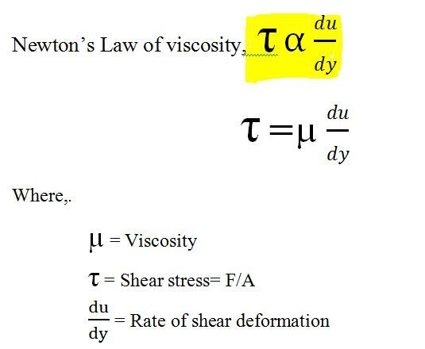
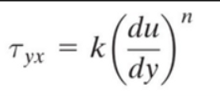
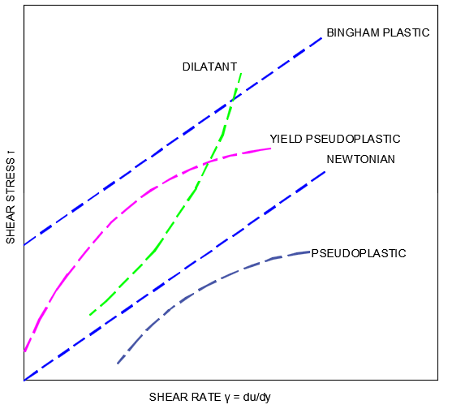
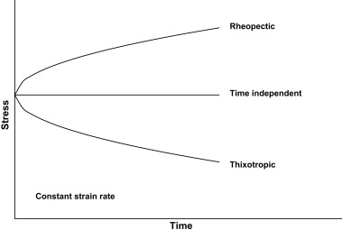

Newtonian And Non-Newtonian Fluids
-
Newtonian Fluids:
-
Fluids which obey Newton’s law of viscosity are called newtonianfluids.
-

-
Rate of deformation is directly proportional to applied shear stress.
It is given as:

-
In case of N=1, the fluid is newtonian.
-
Non-Newtonian Fluids:
-
Fluids which deviate from newton's law of viscosity are called non-newtonian fluids.
-

-
In case of N<1, this are shear thinning fluids ,i.e,
on increasing shear viscosity decreases and are also known
as pseudo plastic. Example: Paints.
-
In case of N>1, this are shear thickning fluids ,i.e,
on increasing shear viscosity increases and are also known
as Dilatant. Example: Corn Starch.
-
Non-Newtonian fluids are even classified on basis relation of strain with time.
They are :
-
Rheopetic fluids: Viscosity increases as time increses at a constant shear stress.
-
Thixotropic fluids: Viscosity decreases as time increases at a constant shear stress.
-
